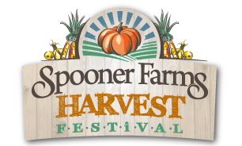
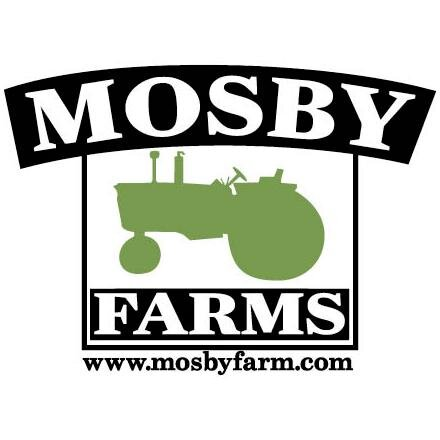

Looking for a fun afternoon adventure with the kids? Go on Down to Spooner
Farms in Puyallup, WA for their fall Harvest Festival!
Click the Spooner Farms logo on the left to visit their page!
The Carpinito Brother hail from Kent, WA and have been serving
Washington's family and friends with pumpkin patch fun since 1969!
It's the perfect excursion for some fall-friendly fun!
Click the Carpinito logo on the left to visit their page!
Mosby Farms Pumpkin Patch

Mosby Farms is located in Auburn, WA! Their family oriented, simple,
harvest-style is a delight. They are also pet friendly. Are you ready
for your ultimate fall fantasy?
Click the Mosby Farms logo on the left to visit their page!